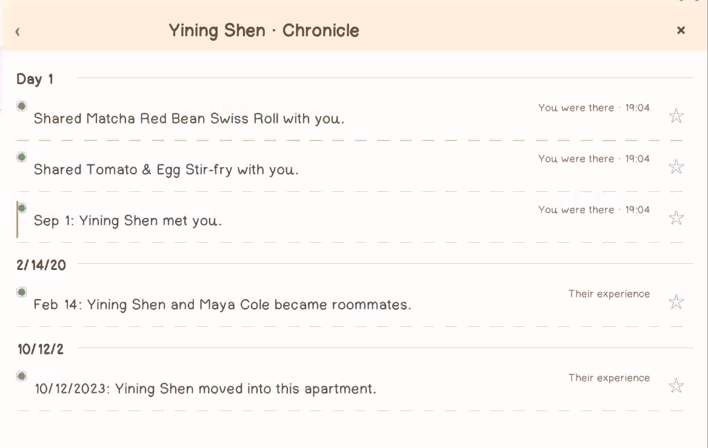
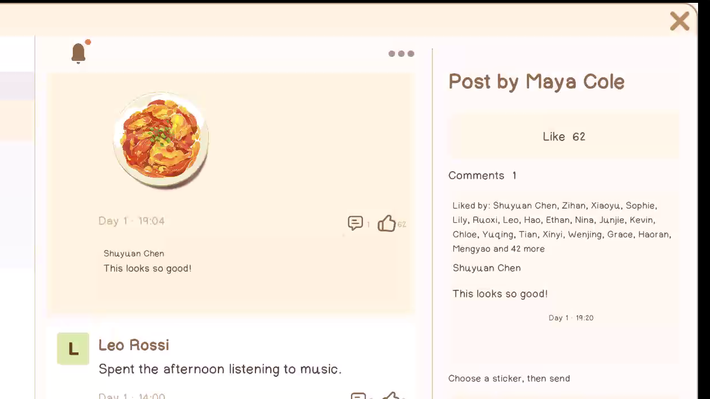
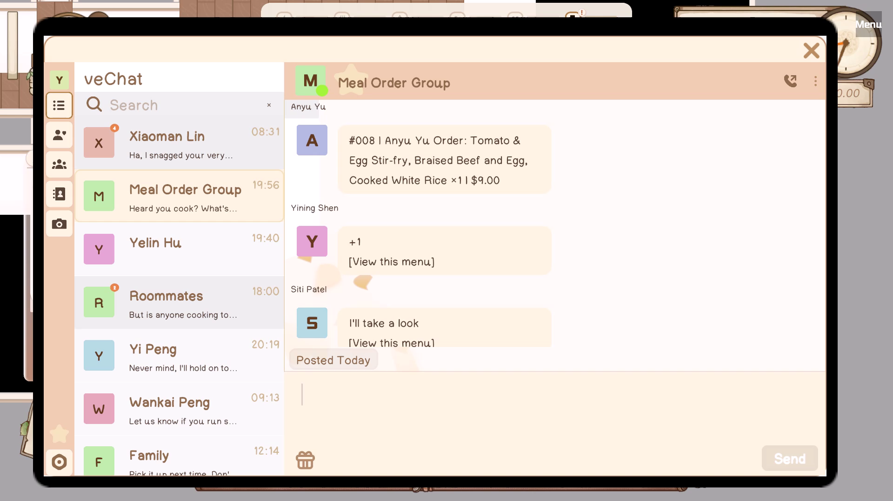
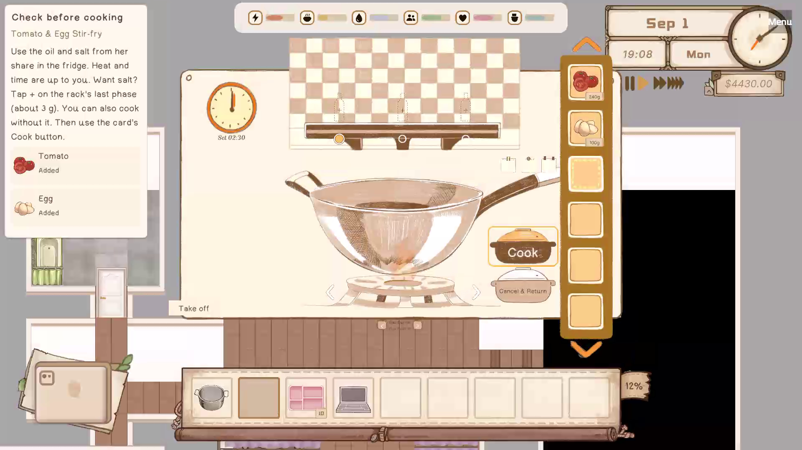
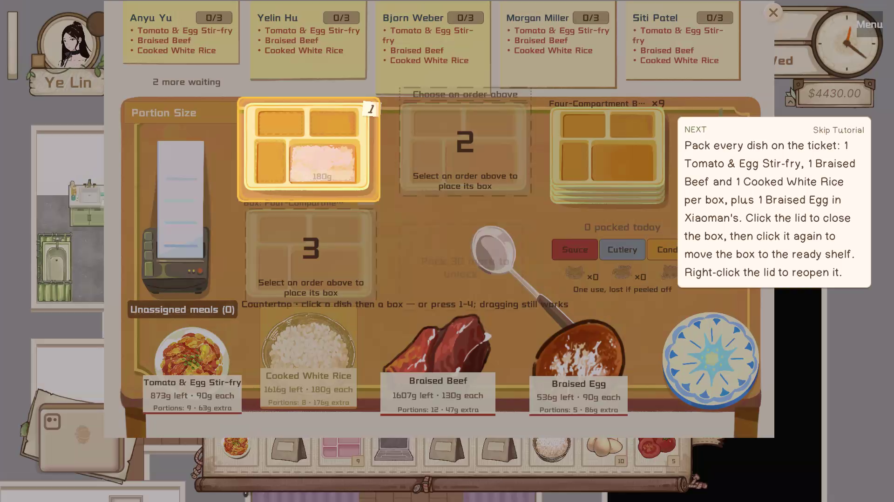

Cook with what you have. See what dinner meant to the people who ate it.
You're an international student living in the living room of a shared apartment. Tonight your shelf in the fridge is empty. Your roommate has tomatoes and eggs. Your roommate takes a photo before she eats. Later, you can read what her friends thought of your dinner.
Open Yining’s Chronicle on your phone. She moved into the apartment in 2023 and became roommates with Maya before you arrived. Now there’s an entry you remember from the other side of the table.
“Shared Tomato & Egg Stir-fry with you.”Yining’s Chronicle, Day 1

You answer with reaction stickers. When your roommate posts dinner on her feed, you can read what her friends say, including people you’ve never met. A few days later, names appear in the Meal Order Group beside lunch orders. Open a contact’s profile to see their tastes, usual orders and how they see you.


On your first night, take tomatoes and eggs from your roommate’s shelf. Lay them out on the cooking paper, season them and choose the heat and cooking time. The same ingredients can turn out silky, dry or burnt.

When eight people order lunch, every ingredient has somewhere to go. Order salt and oil on your tablet and collect the delivery at the front door. Split two litres of water between the braise and the rice. While the braise simmers, cook the rice, then portion 180 grams into the large compartment of each lunch box.

A narrated gameplay walkthrough with English captions.
The story opens with three days in the shared apartment.
After the guided opening, you can visit the supermarket in Chinatown, browse the weekend farmers' market on the pedestrian street, or fish at the harbor. The market is open on Saturdays and Sundays from 8 a.m. to 1 p.m. in-game.